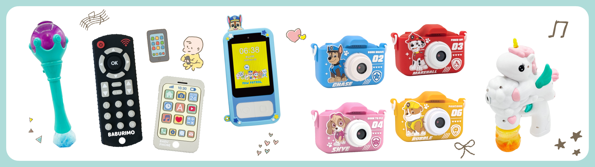

20〜30代活躍｜自社商品＆OEM｜人気キャラクターIP多数

一緒に働く新しい仲間を募集しております。
独自の仕入れルートと企画力を強みに、自社開発商品・OEM商品を全国展開する大手小売チェーンや専門店へ供給している他、オンラインモールでのEC販売強化を進めています。
少人数の組織だからこそ、部署の垣根を越えて意見を出しやすく、アイデアがそのまま商品化されるスピード感があります。
年齢や経験に関係なく、良い提案はすぐに採用される文化があり、若手でも新商品の企画や改善提案にどんどん挑戦できます。
「やりたいことを実現できる環境」で、成長の機会が豊富な会社です。
パウ・パトロール、リラックマ、おさるのジョージ、すみっコぐらしなど、誰もが知る人気キャラクターとのコラボ商品企画に携われます。
キャラクターの版元との打ち合わせや監修対応など、IPビジネスの最前線を経験できるのは玩具メーカーならではの魅力です。
商談は全国展開する大企業が中心。先輩社員のサポートを受けて、慣れてきたら担当として独り立ち。
自分の提案した商品が全国の店舗に並ぶ達成感は格別です。
市場調査、企画、サンプル確認、仕様調整、展示会対応まで、営業でありながら企画職のようなクリエイティブな仕事にも挑戦できます。
代表との距離感も近く、風通しの良い社風なので、年齢に関係なく意見が通りやすく、入社すぐでも新商品の企画立案に携われます。
A：問題ありません。ほとんどの社員が未経験からスタートしています。
A：不要です。中国・香港スタッフとは日本語でコミュニケーションできます。
A：歓迎します。営業職でも企画に関わる機会が多く、入社後に学べます。
A：営業経験があれば歓迎します。企画は入社後に学べる環境です。
A：問題ありません。監修対応はマニュアルがあり、先輩がサポートします。
入社当初からOEM案件に関わり、キャラクター商品の企画提案を担当。自分のアイデアが商品化される瞬間が一番のやりがいです。
キャラクター監修対応やパッケージデザインを担当。営業・企画と連携しながら、デザインで商品の魅力を最大化しています。
楽天市場の運営、販促企画、SNS、仕入れなど幅広い業務を担当。現場の声を商品企画にフィードバックし、売上に直結する提案を行っています。
まずは気軽に話を聞きたい方に向けた選考フローです。
Googleフォームから「カジュアル面談希望」を選択してください。
オンラインまたは来社で15〜30分程度お話しし、会社の雰囲気や仕事内容を知っていただきます。
面談後、「応募したい」と思ったら履歴書・職務経歴書をご提出ください。
最初から応募したい方はこちらのフローになります。
Googleフォームから応募し、履歴書・職務経歴書をご提出ください。
書類選考 → 面接2回（来社） → 内定という流れです。